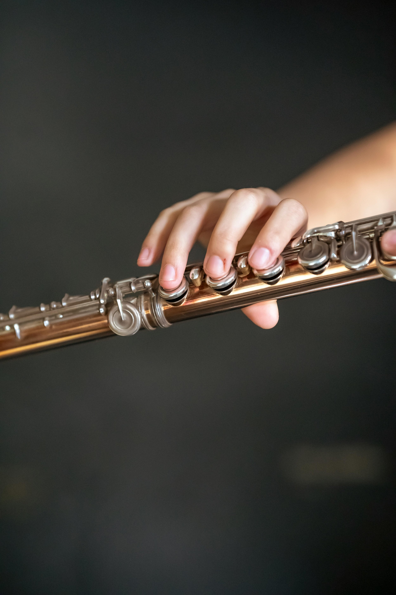
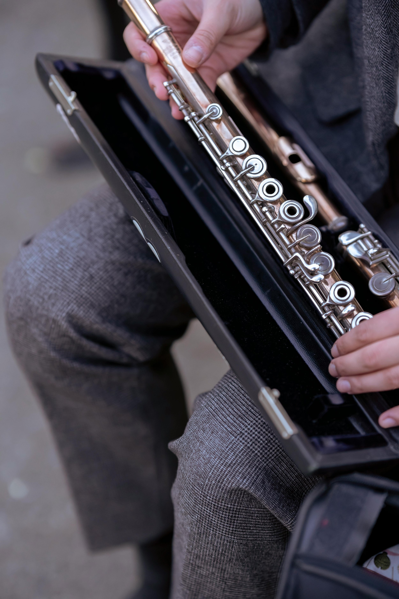
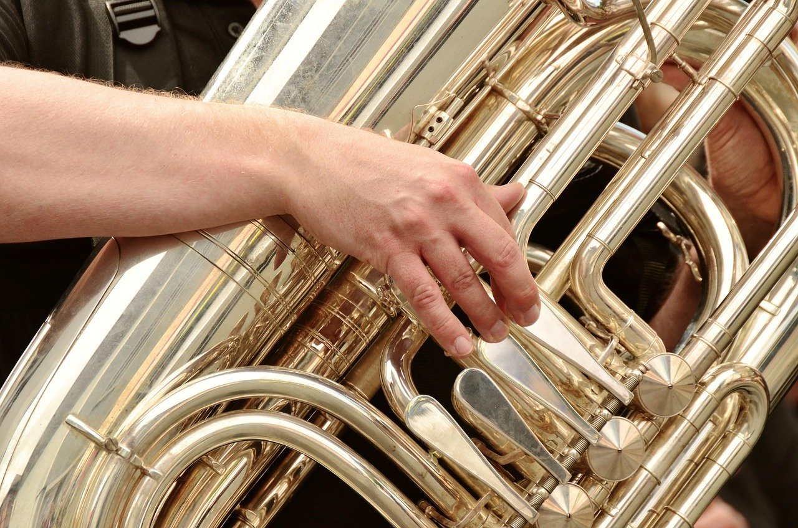
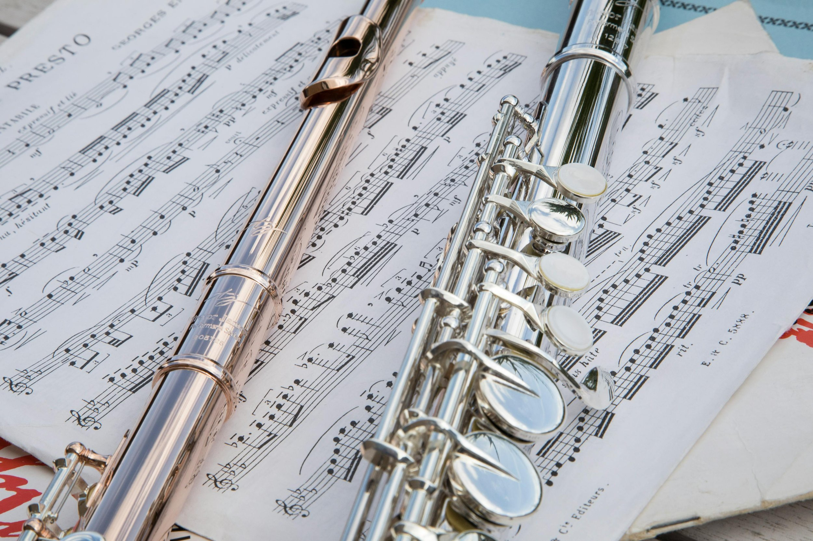

How It Works
Everything you need to know to join, learn, and play with confidence
Ready to start playing? Still have questions?Open Door Band is for absolute beginners and returning musicians — no auditions, no pressure.
Whether you’re ready to play or simply curious, you can learn, listen, and join at your own pace.

What to Expect at Rehearsals
Rehearsals are weekly on Monday mornings and run from 9:00–11:30 AM.
Each session is designed to be flexible, beginner-friendly, and supportive—so you can focus on what you need most.
9:00–10:00 — Open Learning & Support Time
The first part of the morning is an open session where you can come and go as needed.
During this time, you might:
Learn or review note reading and rhythm basics
Ask questions about your music
Get help with your instrument
Try a new instrument (just let me know in advance)
Practice at your own pace with guidance available
Whether you’re brand new or returning, this time is here to support you.
10:20–11:30 — Ensemble Time
We come together as a full group to make music using simple, tuneful selections.
This is where everything starts to click—listening, playing together, and building confidence as an ensemble.
No auditions, no pressure, no judging — just learning and enjoying the process.
Returning Players and Multi-Instrument Learners
Open Door Band is built for all levels — and intentionally flexible.
If you’ve completed a prior Open Door Band cycle or are learning a second instrument, you’re welcome to arrive just before ensemble time. The first hour covers core beginner material, so experienced players may join us at 10:00 AM as the ensemble gets set up.
If you’re still undecided on your instrument, you are welcome to stay and listen to the ensemble. Hearing the group often helps newcomers make confident choices.
And you may leave after any portion of the morning if that best fits your schedule or energy.
Everyone learns at their own pace in a supportive environment — it’s all about progress, not perfection.
Session Schedule
Open Door Band meets in 11-week sessions, followed by a 2-week break before the next session begins. This quarterly rhythm keeps things flexible and easy to join at any time of year.
The 11th week serves as a relaxed showcase rehearsal — an informal concert where family and friends are invited to hear what we’ve been working on. No tickets, no pressure — just music and fun!

Supplies Needed
To play in the ensemble, you’ll need:
Your instrument
A music stand
Tuner app
Folder or binder for printed music
A Google account to access our shared music library
Optional Supplies
These can make rehearsing even easier:
iPad with ForScore app, Apple Pencil, and foot pedal
Flashcards or Quizlet app for music theory
Metronome app
Duolingo app (music path) for note reading practice
Where We Rehearse
Open Door Band meets weekly on Monday mornings at the Olympia Recreation Center in The Villages.
Rehearsals are open to all Villages residents. Eligible guests are welcome with a valid Guest ID.
Visitors who are exploring instruments or considering joining are welcome to sit in and observe at any time.


Your Musical Path
Open Door Band is a comfortable home for many of our musicians — a place to grow skills, confidence, and community at your own pace.
Some players, however, may dream of joining a more advanced concert band once they feel ready. We support that goal wholeheartedly!
As part of your musical journey, you’ll receive guidance on when you’re prepared to move on and what steps to take next. Those who transition to other community bands are celebrated with a small graduation recognition — a certificate marking their accomplishment and readiness. Graduation is a proud moment for both the player and the band.
Whether you stay or advance, you’ll always be part of the Open Door Band family — and your progress will reflect the care, preparation, and musicianship we build together.
Explore Local Bands
Come See What It’s All About
You’re welcome to visit a rehearsal, say hello, and see if Open Door Band feels like your next musical home.
Whether you’re ready to play or just curious, you’ll find a welcoming community of learners and music lovers.
Join the Interest List